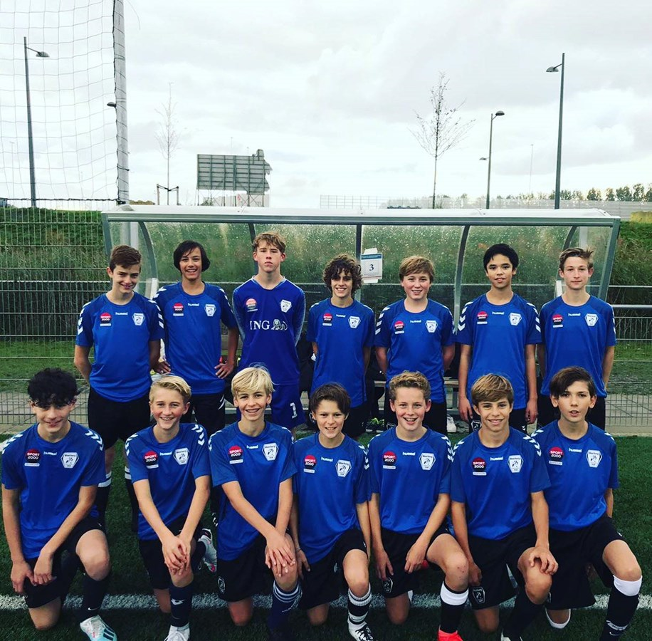
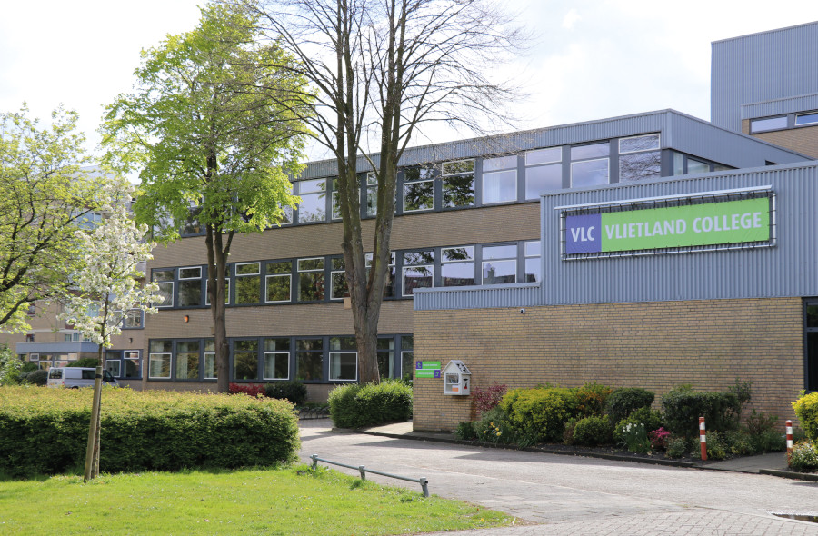

Hoi, ik ben Xander Schuhmacher ik ben 16 jaar oud, en ik woon in Leiden.
Ik zit op voetbal in de JO-17-1 van meerburg, ik vind voetballen echt leuk, en ik houd in het algemeen erg van sporten. Ik zit op het vlietland college in Leiden en ik werk bij de alberheijn als bijbaan. Deze website staat vol met informatie over computeronderdelen, kleurmodellen, afbeeldingen en nog veel meer ik hoop dat ik u wat heeft geleerd als u mijn website verlaat.  